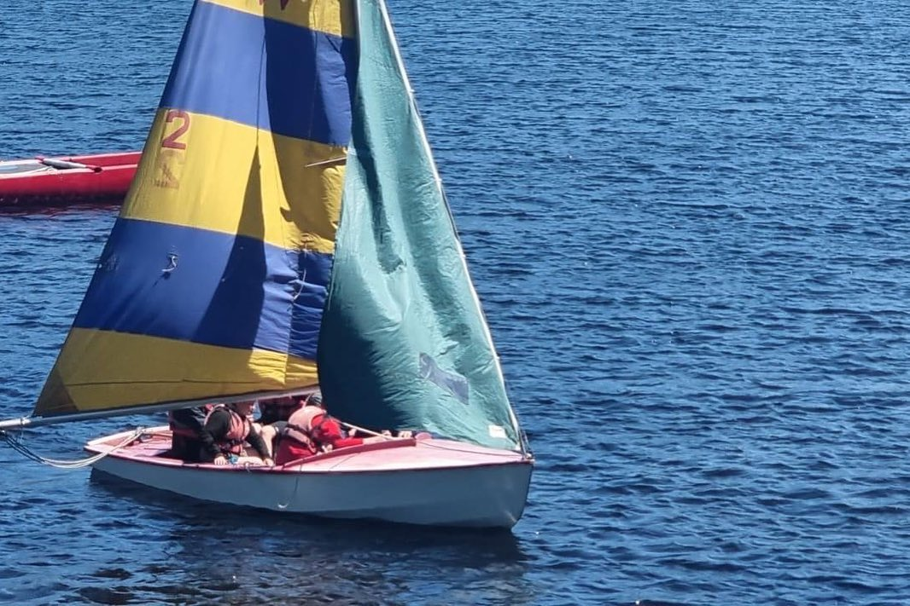

Gallery
What a year at Triffid actually looks like
Camps, expeditions, big days out and ordinary Monday nights. All our own photographs, all our own Explorers, all in real Shropshire weather.
Updated from Instagram
Our own photos
Latest adventures
Fresh from our Instagram
This grid syncs automatically, so it's whatever we got up to last.
Loading photos…
The archive
A few of our favourites
Pulled out of the last couple of years.





Fancy being in next year's photos?
Mondays, 7–9pm at Ludlow Scout Hut. Turn up and see what it's like.